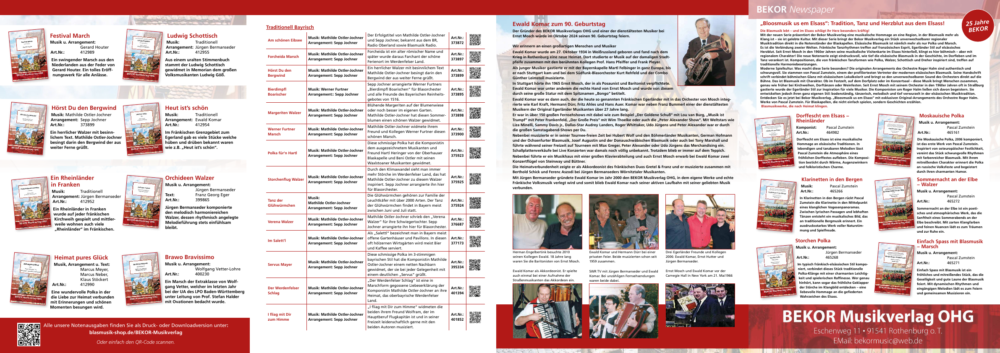

Fränkisch & Böhmisch
Hannes Polka, Einen Rosenstrauß aus Böhmen, Amiras 6er Polka, Drei weiße Rosen und viele weitere Titel.
Verlagsprogramm
Druck- und Downloadversionen für Blasorchester und kleine Besetzungen.
Hannes Polka, Einen Rosenstrauß aus Böhmen, Amiras 6er Polka, Drei weiße Rosen und viele weitere Titel.
Servus Mayer, Hörst Du den Bergwind, Der Werdenfelser Schlag, Hoch Werdenfels.
Winter im Gebirg, Die Partnach, Festival March, Brawo Bravissimo und weitere Werke für die Bühne.
Das neue Katalogverzeichnis ist als durchsuchbare Online-Tabelle vorbereitet.
Zum Katalog 2026